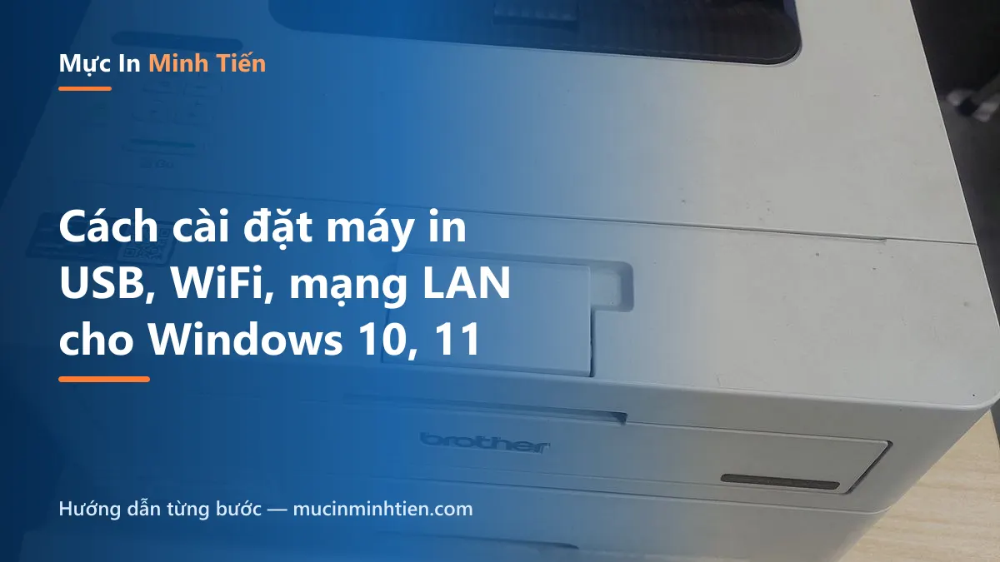
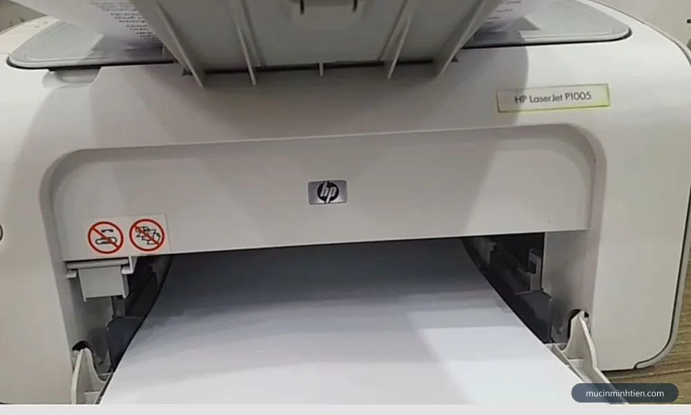
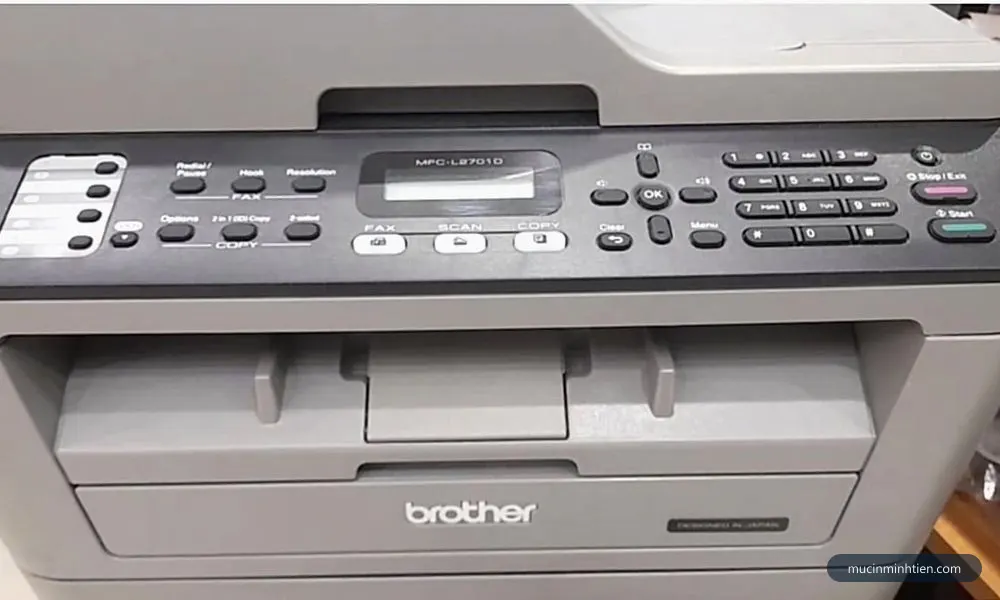
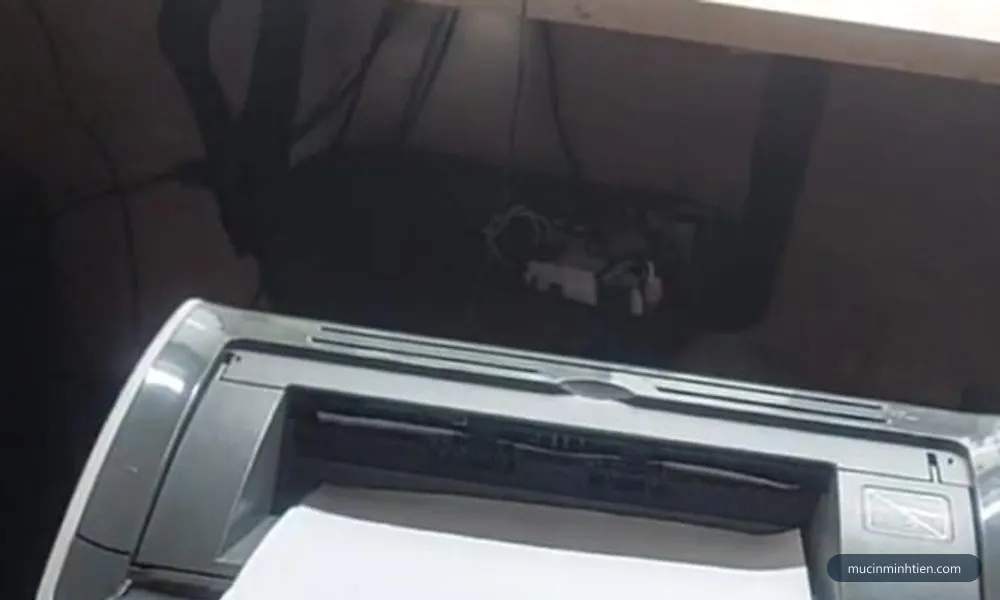
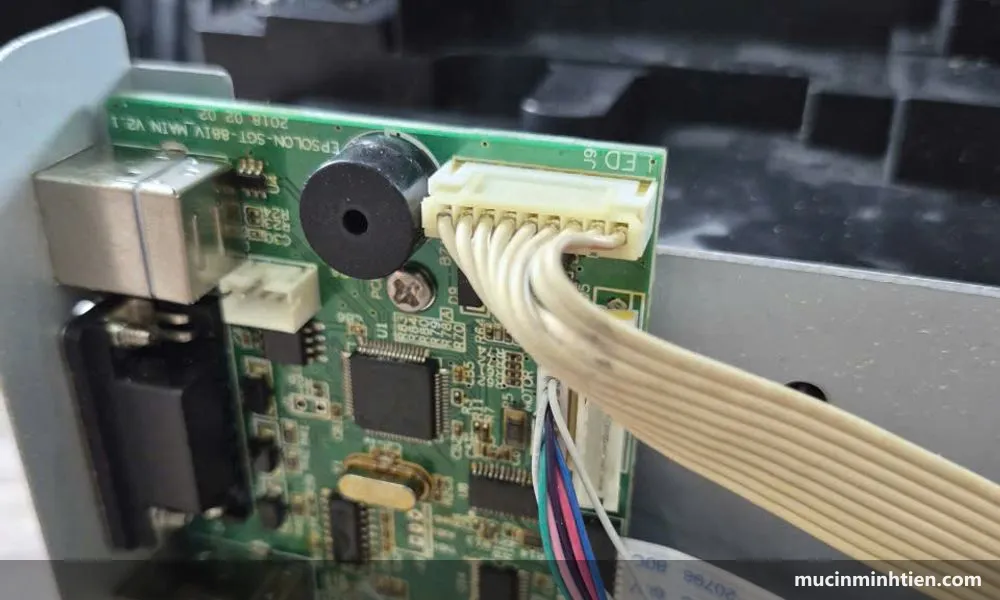

Cách cài đặt máy in vào máy tính Windows: USB, WiFi và mạng LAN
Cập nhật: 27/07/2026 · Áp dụng cho Windows 10 và Windows 11

Mua máy in mới, hoặc chuyển máy in cũ sang máy tính khác — việc đầu tiên luôn là cài đặt cho máy tính "nhìn thấy" máy in. Bài này gom cả ba cách kết nối phổ biến (USB, WiFi, chia sẻ qua mạng LAN) thành các bước ngắn gọn, kèm phần xử lý lỗi máy tính không nhận máy in ở cuối bài.
Cách 1 — Cài máy in qua USB (đơn giản nhất)
Cài driver như trên, cắm dây USB khi trình cài yêu cầu, bật máy in.
Windows nhận thiết bị → mở Settings → Bluetooth & devices → Printers & scanners kiểm tra máy in đã xuất hiện.
Bấm vào máy in → Set as default để đặt làm mặc định.
In trang test: chọn máy in → Print test page. Ra giấy là xong.

Máy in HP LaserJet P1005 — thuộc nhóm máy áp dụng hướng dẫn trong bài.
Cách 2 — Cài máy in WiFi
Kết nối máy in vào WiFi: dòng có màn hình thì vào Menu → Network → WiFi Setup chọn mạng và nhập mật khẩu; dòng không màn hình dùng nút WPS (bấm WPS trên router rồi bấm nút WiFi trên máy in trong 2 phút).
Trên máy tính (cùng mạng WiFi): Settings → Printers & scanners → Add device — Windows sẽ tự tìm thấy máy in trong mạng.
Nếu không tự thấy, cài driver đầy đủ của hãng và chọn kiểu kết nối Wireless trong trình cài.
In thử từ máy tính; điện thoại có thể in qua ứng dụng của hãng (Canon PRINT, HP Smart, Epson Smart Panel).

Máy in Brother MFC-L2701D. Các bước ở trên làm được trên dòng máy này.
Cách 3 — Share máy in qua mạng LAN (văn phòng)
Dùng khi máy in chỉ có cổng USB nhưng cả phòng cần in chung: cắm máy in vào một máy tính "chủ", các máy khác in nhờ qua mạng nội bộ.
Trên máy chủ: cài máy in như Cách 1 → Control Panel → Devices and Printers → chuột phải máy in → Printer properties → tab Sharing → Share this printer, đặt tên share dễ nhớ.
Vẫn trên máy chủ: Settings → Network → bật Network discovery và File and printer sharing cho mạng Private.
Trên máy khác: mở File Explorer, gõ \\TEN-MAY-CHU (hoặc IP, vd \\192.168.1.10) → thấy máy in share → chuột phải → Connect. Driver tự đổ về, in thử là xong.
Lưu ý: máy chủ phải bật thì các máy khác mới in được. Văn phòng in nhiều nên cân nhắc mua máy in có sẵn cổng LAN/WiFi để bỏ phụ thuộc máy chủ — cần tư vấn chọn máy phù hợp có thể gọi 0915 510 203.

Máy in Canon LBP2900 — khác dòng thì vị trí nút có thể khác, nguyên tắc xử lý vẫn vậy.
Máy tính không nhận máy in — xử lý nhanh

Cổng kết nối trên bo mạch máy in. Cáp USB lỏng hoặc cổng bẩn là nguyên nhân hay bị bỏ qua nhất.
Đổi dây / đổi cổng USB: dây USB in ấn hỏng ngầm rất phổ biến, nhất là dây dài trên 3m.
Khởi động lại Print Spooler: bấm Windows + R → gõ services.msc → tìm Print Spooler → Restart. Lỗi "máy in không in được dù đã kết nối" đa số hết sau bước này.
Xoá driver cũ cài lại: Settings → Printers → Remove máy in cũ → cài lại driver mới tải từ hãng.
Máy in chung mạng không thấy nhau: kiểm tra 2 máy có cùng dải mạng không (cùng WiFi/switch), và Network discovery đã bật chưa.
Tóm tắt nhanh các bước xử lý trong bài. Lưu ảnh này để làm theo khi không tiện mở web.
Câu hỏi thường gặp
Cài máy in có cần đĩa driver không?
Không. Tải driver theo model từ trang chủ hãng là đủ; nhiều dòng mới Windows 10/11 tự nhận khi cắm USB. Đĩa kèm máy thường còn là bản driver cũ.
Vì sao máy tính không nhận máy in qua USB?
Bốn nguyên nhân hay gặp: dây USB lỏng/hỏng, driver sai model, dịch vụ Print Spooler treo, cổng USB lỗi. Xử lý theo thứ tự: đổi dây → đổi cổng → restart Print Spooler → cài lại driver.
Một máy in dùng chung cho nhiều máy tính được không?
Được, theo 2 cách: máy in có WiFi/LAN thì mọi thiết bị cùng mạng in trực tiếp; máy in chỉ có USB thì share qua một máy tính chủ như hướng dẫn Cách 3 trong bài.